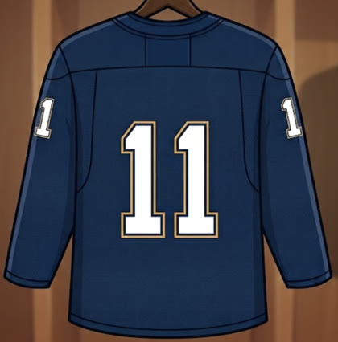
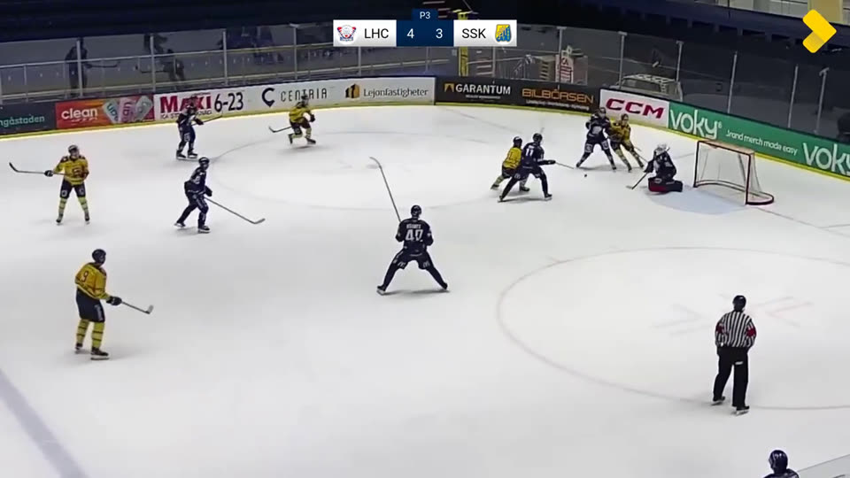

PhD thesis, University of York. Supervised by Prof. William Smith. In preparation.
Humans infer the unseen constantly: a chair remains behind us when we turn away, a cat's tail behind a sofa implies a whole cat, a few sparse lines in a sketch call up a photorealistic object. Artificial vision systems largely do not. They operate frame by frame on visible pixels, and lose the thread the moment the evidence goes away.
This thesis argues that robust computer vision requires moving beyond the processing of visible pixels to the inference of the unseen. Cross-domain retrieval, amodal video segmentation and out-of-view point tracking are not three problems but one, differing only in how far the evidence has receded: abstracted, then occluded, then absent. The barrier is as much a question of supervision as of architecture.
The sequence below contains the thesis in miniature. The query is abstracted: a drawing matched to photographic evidence, with no pixel in common. The target is then occluded, behind other players in identical navy. Finally it is absent, outside the frame altogether, and the identity must survive an interval in which the camera observes nothing relevant to it. Nine seconds of broadcast hockey at 3 frames per second, exactly the frames put to the vision–language models discussed in the thesis. See how you get on.


Most people manage this, particularly when stepping through the frames in order. Contemporary vision–language models, given the same twenty-five frames and the same question, do not. The failure is not perceptual: every frame is sharp and the jersey is legible in the first one. Two things make it hard. Granularity: asked which of several candidates conceals an object, a model will often answer correctly, but its competence is verbal and coarse, whereas these tasks demand a pixel-level mask, an ordered ranking, or a continuous direction. Compounding: the sequence is not difficult in one respect but in three at once, and it demands all three in order, on the same target.
The same sequence played back at its sampled rate. Continuity of motion makes the binding far easier to hold than it is frame by frame, which is itself part of the point.
Broadcast footage © Svenskhockey.tv (Linköping HC vs. Södertälje SK). Frames reproduced unaltered, including the broadcaster's on-screen mark, under UK fair dealing for criticism and review.